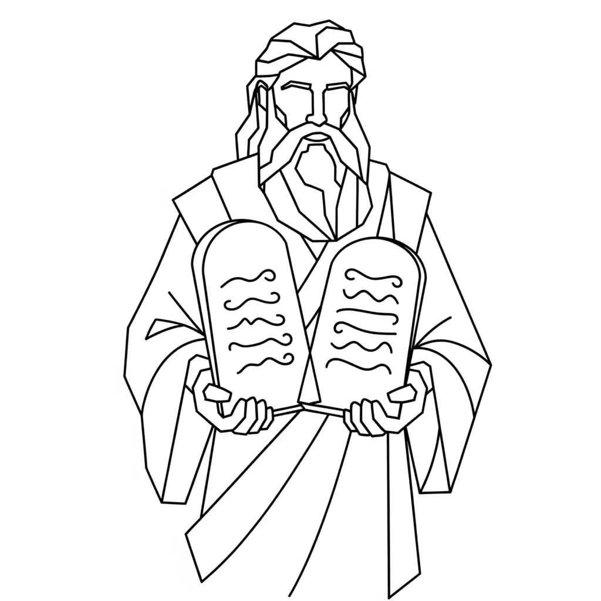

"But the word is very near you. It is in your mouth and in your heart, so that you can do it" — Deuteronomy 30:14
From Exodus 24 onwards, Moses receives the Ten Commandments on Mount Sinai. While traditionally read as moral laws, Neville Goddard interpreted them as psychological principles — instructions for consciously turning the mind inwards and directing imagination to shape experience. Their being "engraved in stone" symbolises their eternal and unchanging nature.
These early Scriptures depict the mind’s initial attempts to apply the Law of Assumption — often still relying on, and blending in, outward ritual and religion in its understanding. This is why many of the commands in books like Leviticus appear ritualistic, yet ultimately point toward and illustrate the Law of Assumption.
The Encounter: Receiving the Law of Imagination
Moses’s ascent up the mountain isn’t a physical event — it represents an improvement in consciousness. In Neville’s teaching, God is your imagination, the creative force behind everything. The commandments represent the eternal principles of creation — the inner "laws" you live by when you know imagination is God.
The stone tablets symbolise the solid, unwavering truth of these laws: that your inner assumptions determine your world.
"And the Lord said to Moses, 'Come up to me into the mountain, and be there: and I will give you the tables of stone, and the law and the commandments which I have written; that you may teach them.'"
Exodus 24:12
The 10 Commandments as Laws of Imagination
Through Neville’s eyes, these are not rigid moral rules but reminders to guard and direct your imagination.
-
No Other Gods (The “I AM” Alone)
You must recognise your imagination — your “I AM” — as the only creative power. Nothing is outside of you. -
No Graven Images (Mental Clarity)
Don’t fix your mind on false, limiting ideas. Keep your inner vision clear and true to what you desire. -
Do Not Take the Name in Vain (Right Use of “I AM”)
Never misuse “I AM” in negative ways. The words and feelings you attach to “I AM” shape your reality. -
Remember the Sabbath (Rest in the Assumption)
Rest mentally; stop striving. Enter the Sabbath by assuming your wish is already fulfilled. -
Honour Father and Mother (Honour Your Current State)
Respect your current manifested reality — it came from past states. Honour it as the foundation for new creation. -
Do Not Kill (Protect Your Inner Life)
Don’t “kill” your desires or sabotage your visions with doubt and negativity. -
Do Not Commit Adultery (Stay Loyal to Your Desire)
Remain faithful to your chosen assumption. Wandering to contradictory states delays manifestation. -
Do Not Steal (Own Your Creative Power)
Don’t “steal” from yourself through comparison or disbelief. Fully claim your power. -
Do Not Bear False Witness (Speak Truth to Desire)
Speak and think in alignment with your chosen reality. Do not betray your vision with negative words. -
Do Not Covet (Live in Fulfilment)
Desire without envy. Know your inner state is the source of all, and abundance flows from your own imagination.
Stone Tablets: Symbols of Unchanging Creative Law
The tablets of stone remind us these laws are eternal. They do not bend to circumstances; rather, circumstances bend to them. By living these laws, we shape life deliberately and align with our divine creative nature.
From Law to Living Expression
The commandments are not restrictions but guides to mastery of imagination. As Moses received these on Sinai, we receive them inwardly whenever we accept imagination as the only reality.
"For it is God, who said, Let light shine out of the dark, who has shone in our hearts to give the light of the knowledge of the glory of God in the face of Jesus Christ."
2 Corinthians 4:6
When you know and embody these principles, you move from merely knowing "I AM" to living "I AM that I AM" — the full expression of creative power.
Conclusion: Living as the Law
Through Neville’s interpretation, the Ten Commandments are timeless creative instructions. By aligning thought, feeling, and action to these laws, you embody your true nature as the light of the world.
"You are the light of the world. A town built on a hill cannot be hidden."
Matthew 5:14
About The Author | Architecture Series | Exodus 3:14: I AM | Moses Series | Numbers Series | Numbers: Ten